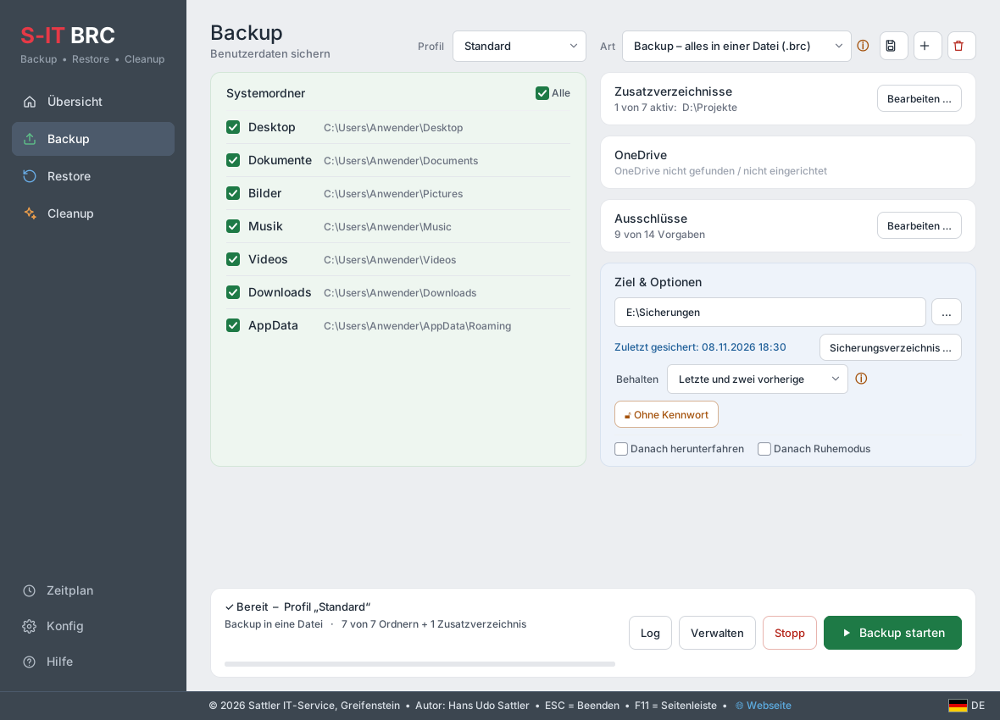
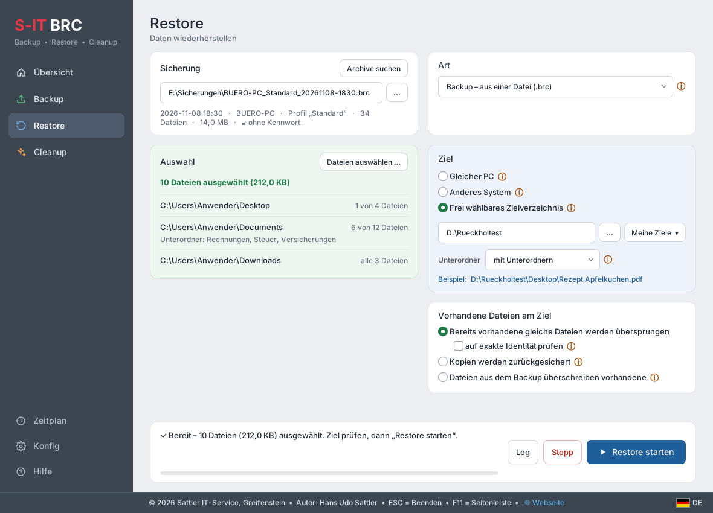
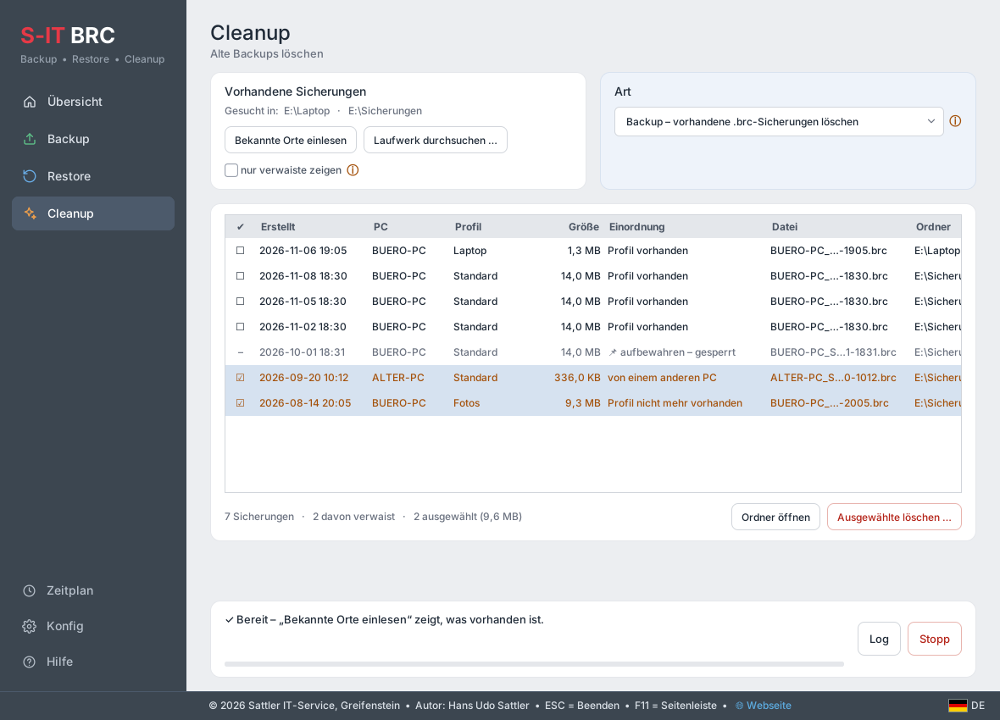

Zwei Arten von Sicherung NEU
Je Profil wählen Sie die Art: Die Dateisicherung kopiert Ihre Dateien einzeln in Ordner am Ziel. Das Backup (.brc) legt alles in einer einzigen Datei ab – innen ein ZIP-Archiv nach Standard.
Verschlüsselung NEU
Ein Backup (.brc) lässt sich mit einem Kennwort verschlüsseln (AES-256). Auch die Namen der Dateien und Ordner sind dann von außen nicht lesbar. Eine Hintertür gibt es nicht.
Versionen NEU
Sie legen je Profil fest, wie viele Sicherungen erhalten bleiben. Eine ältere wird erst entfernt, wenn die neue vollständig geschrieben ist. Einzelne Sicherungen lassen sich zum Aufbewahren markieren.
Sicherungen prüfen NEU
Das Fenster „Verwalten“ zeigt die Sicherungen eines Profils. „Prüfen“ liest eine Sicherung vollständig und vergleicht jede Datei mit ihrer Prüfsumme.
Restore einzelner Dateien NEU
Aus einem Backup (.brc) holen Sie einzelne Ordner oder Dateien zurück, ohne die ganze Sicherung zu entpacken – an den ursprünglichen Ort, auf ein anderes System oder in ein frei wählbares Zielverzeichnis.
Sicherungsverzeichnis NEU
BRC führt ein Verzeichnis darüber, wann mit welchem Profil wohin gesichert wurde. Die Suche darin findet Dateien nach ihrem Namen in allen Sicherungen, die gerade erreichbar sind.
OneDrive NEU
Ordner, die Windows auf OneDrive umgeleitet hat, sind gekennzeichnet. Dateien, die nur online in der Cloud liegen, lädt BRC für die Sicherung herunter und gibt den Platz danach wieder frei.
Zeitsteuerung
Sichert täglich, wöchentlich, monatlich oder im Intervall – auf Wunsch still im Hintergrund, für beide Arten von Sicherung. Verpasste Termine werden nachgeholt, gleichzeitig fällige reihen sich ein.
Fortschritt im Blick NEU
Bei großen Dateien zeigt ein zweiter Balken den Stand der laufenden Datei. Dazu stehen Gesamtmenge, Tempo und Restzeit da – auch im Fenster einer zeitgesteuerten Sicherung.
Neue Oberfläche NEU
Eine Seitenleiste führt zu Übersicht, Backup, Restore und Cleanup. Fünf Farbschemata von hell bis dunkel und eine Anzeigegröße von 90 bis 200 % stehen zur Wahl.
Acht Sprachen NEU
Programm und Hilfe in Deutsch, English, Français, Español, Nederlands, Italiano, Polski und Hrvatski. Die Bilder der Hilfe zeigen das Programm in der jeweiligen Sprache.
Hilfe und Handbuch NEU
Die Hilfe beginnt mit dem Ablauf in sieben Schritten; die Seite „S-IT-BRC – ganz einfach“ beschreibt das Sichern auf einen USB-Stick. Als PDF liegt ein Handbuch auf Deutsch und Englisch bei.
Cleanup
Hält die Dateisicherung schlank: Veraltete Dateien werden in einen Archivordner verschoben, mit Simulation vor dem echten Lauf. Für Backups (.brc) zeigt Cleanup die Sicherungen und entfernt die, die Sie nicht mehr brauchen.
Profile, Zusatzverzeichnisse, Ausschlüsse
Alle Einstellungen einer Sicherung liegen in einem benannten Profil – mit bis zu sieben Zusatzverzeichnissen und einer eigenen Ausschlussliste für Temp-Ordner, Zwischenspeicher und Ähnliches.
Protokoll
Jeder Vorgang wird protokolliert und ist direkt aus dem Programm abrufbar. Vor jedem Lauf nennt eine Rückfrage in ganzen Sätzen, was geschehen wird.



Die aktuelle Version und der Changelog finden sich im Release-Bereich auf GitHub. Hilfe und Handbuch sind im Programm enthalten; das Handbuch gibt es auch einzeln: S-IT-BRC-Handbuch-v4.0.pdf.
| Komponente | Anforderung |
|---|---|
| Betriebssystem | Windows 10 / Windows 11 (64-Bit) |
| Rechte | Das Setup fordert Administratorrechte an |
| Lieferumfang | Setup, Deinstaller, Hilfe in acht Sprachen, Handbuch als PDF (Deutsch und Englisch) |
- Backup in eine Datei (.brc): zweite Art von Sicherung neben der Dateisicherung, je Profil wählbar; innen ein ZIP-Archiv nach Standard
- Verschlüsselung: Kennwort mit AES-256; auch die Namen der Dateien und Ordner sind von außen nicht lesbar
- Versionen: je Profil festlegen, wie viele Sicherungen erhalten bleiben; einzelne zum Aufbewahren markieren
- Verwalten und Prüfen: Sicherungen vollständig lesen und jede Datei mit ihrer Prüfsumme vergleichen
- Restore: einzelne Ordner oder Dateien aus einem Backup (.brc) zurückholen, ohne die ganze Sicherung zu entpacken
- Sicherungsverzeichnis: Übersicht aller Sicherungen mit Suche nach Dateinamen
- OneDrive: Dateien, die nur online in der Cloud liegen, werden für die Sicherung heruntergeladen und danach wieder freigegeben
- Zeitsteuerung: für beide Arten von Sicherung, neu mit „Monatlich“; zweiter Balken für den Stand großer Dateien
- Neue Oberfläche: Seitenleiste, Übersicht, fünf Farbschemata, Anzeigegröße 90 bis 200 %
- Acht Sprachen: Programm und Hilfe mit Bildern in der jeweiligen Sprache; Handbuch als PDF auf Deutsch und Englisch
- Installation: ein Setup für Installation und portable Nutzung; Übernahme der Einstellungen aus Version 3
Alle Einzelheiten und die früheren Versionen stehen im vollständigen Changelog (Englisch und Deutsch).
Die S-IT-Tools werden kostenlos entwickelt und gepflegt. Über eine kleine Unterstützung freue ich mich:
PayPal – tool-entwicklung@sattler-it.de